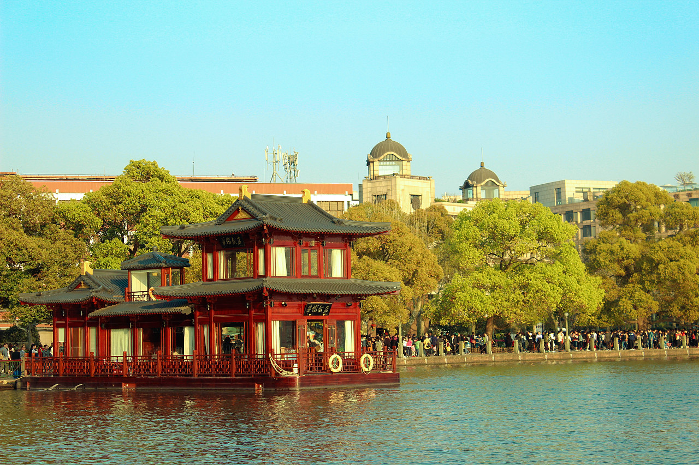

简介
西湖，又名钱塘湖，位于中国浙江省杭州市西湖区龙井路1号，杭州市区西部，汇水面积为21.22平方千米，湖面面积为6.38平方千米，为江南三大名湖之一。
西湖南、西、北三面环山，东邻城区，南部和钱塘江隔山相邻，湖中白堤、苏堤、杨公堤、赵公堤将湖面分割成若干水面，湖中有三岛，西湖群山以西湖为中心，由近及远可分为四个层次。 [7]西湖流域内年径流量为1400万立方米，蓄水量近1400万立方米。 西湖是一座设备齐全、管理完善的灌溉济运水库，通过河渠和闸门，为杭州市区及周边农田提供了充足的水源。西湖还可以协助调节钱塘江的水位，防止城市内涝。

景点特色
西湖南、西、北三面环山，东邻城区，南部和钱塘江隔山相邻，湖中白堤、苏堤、杨公堤、赵公堤将湖面分割成若干水面，湖中有三岛，西湖群山以西湖为中心，由近及远可分为四个层次。西湖流域内年径流量为1400万立方米，蓄水量近1400万立方米。
西湖是一座设备齐全、管理完善的灌溉济运水库，通过河渠和闸门，为杭州市区及周边农田 提供了充足的水源。西湖还可以协助调节钱塘江的水位，防止城市内涝
荣誉
2007年，西湖所在的杭州西湖风景名胜区被评为“国家AAAAA级旅游景区”。2011年6月24日，杭州西湖文化景观被列入《世界遗产名录》。 厉声教先生曾留下著名词篇《采桑子·西湖四咏》描写杭州西湖四季美景